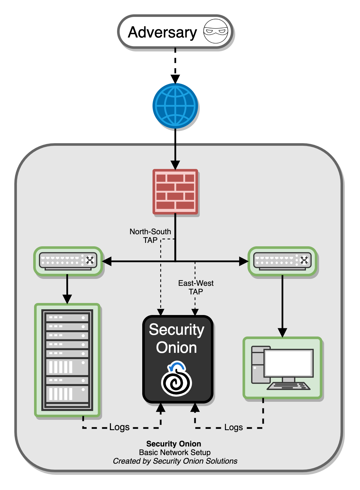
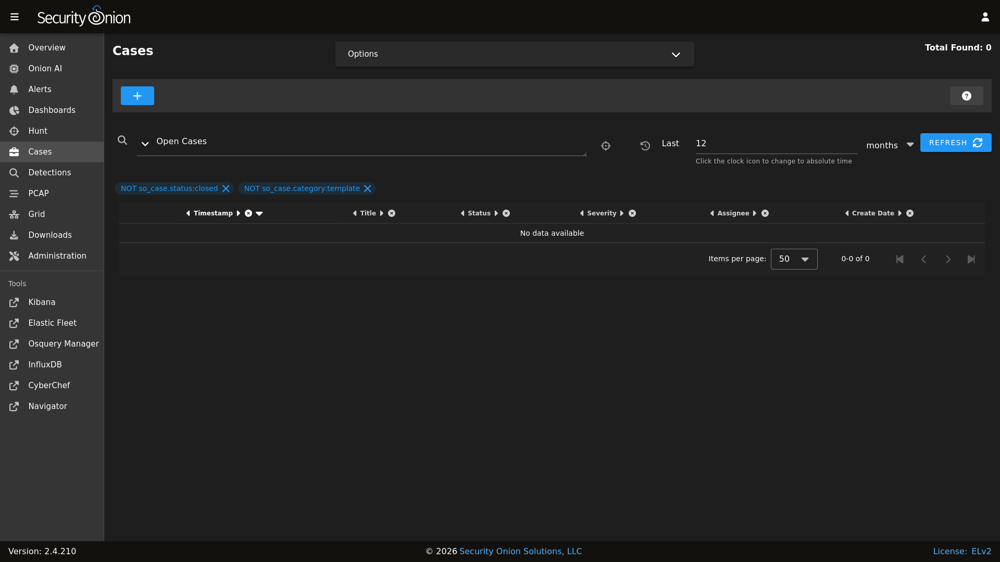
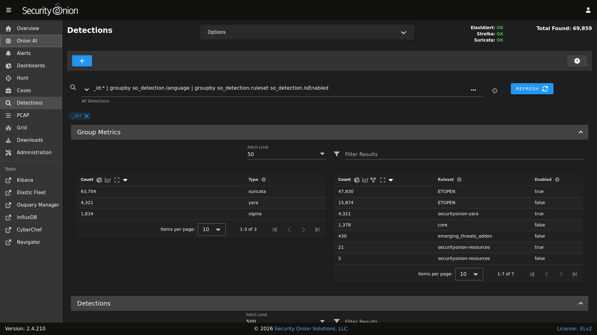

Introduction
Security Onion is a free and open platform built by defenders for defenders. It includes network visibility, host visibility, intrusion detection honeypots, log management, and case management.
For network visibility, we offer signature based detection via Suricata, rich protocol metadata and file extraction using either Zeek or Suricata, full packet capture using either Stenographer or Suricata, and file analysis. For host visibility, we offer the Elastic Agent which provides data collection, live queries via osquery, and centralized management using Elastic Fleet. Intrusion detection honeypots based on OpenCanary can be added to your deployment for even more enterprise visibility. All of these logs flow into Elasticsearch and we’ve built our own user interfaces for alerts, dashboards, threat hunting, case management, and grid management.
Note
Check out our Introduction to Security Onion video at https://securityonion.com/demo!
In the diagram below, we see Security Onion in a traditional enterprise network with a firewall, workstations, and servers. You can use Security Onion to monitor north/south traffic to detect an adversary entering an environment, establishing command-and-control (C2), or perhaps data exfiltration. You’ll probably also want to monitor east/west traffic to detect lateral movement. As more and more of our network traffic becomes encrypted, it’s important to fill in those blind spots with additional visibility in the form of endpoint telemetry. Security Onion can consume logs from your servers and workstations so that you can then hunt across all of your network and host logs at the same time.
{kind=link}

Network Visibility
From a network visibility standpoint, Security Onion seamlessly weaves together intrusion detection, network metadata, full packet capture, file analysis, and intrusion detection honeypots.
Intrusion Detection
Security Onion generates NIDS (Network Intrusion Detection System) alerts by monitoring your network traffic and looking for specific fingerprints and identifiers that match known malicious, anomalous, or otherwise suspicious traffic. This is signature-based detection so you might say that it’s similar to antivirus signatures for the network, but it’s a bit deeper and more flexible than that. NIDS alerts are generated by Suricata.
Network Metadata
Unlike signature-based intrusion detection that looks for specific needles in the haystack of data, network metadata provides you with logs of connections and standard protocols like DNS, HTTP, FTP, SMTP, SSH, and SSL. This provides a real depth and visibility into the context of data and events on your network. Security Onion provides network metadata using your choice of either Zeek or Suricata.
Full Packet Capture
Full packet capture is like a video camera for your network, but better because not only can it tell us who came and went, but also exactly where they went and what they brought or took with them (exploit payloads, phishing emails, file exfiltration). It’s a crime scene recorder that can tell us a lot about the victim and the white chalk outline of a compromised host on the ground. There is certainly valuable evidence to be found on the victim’s body, but evidence at the host can be destroyed or manipulated; the camera doesn’t lie, is hard to deceive, and can capture a bullet in transit. Full packet capture can be written to disk using either Stenographer or Suricata.
File Analysis
As Zeek and Suricata are monitoring your network traffic, they can extract files transferred across the network. Strelka can then analyze those files and provide additional metadata.
Intrusion Detection Honeypot (IDH)
We also have an Intrusion Detection Honeypot node that allows you to build a node that mimics services. Connections to these services automatically generate alerts.
Host Visibility
In addition to network visibility, Security Onion provides endpoint visibility via the Elastic Agent which provides data collection, live queries via osquery, and centralized management using Elastic Fleet.
For devices like firewalls and routers that don’t support the installation of agents, Security Onion can consume standard Syslog.
Analysis Tools
With all of the data sources mentioned above, there is an incredible amount of data available at your fingertips. Fortunately, Security Onion tightly integrates the following tools to help make sense of this data.
Security Onion Console (SOC)
Security Onion Console (SOC) is the first thing you see when you log into Security Onion. It includes our Alerts interface which allows you to see all of your NIDS alerts from Suricata.

Security Onion Console (SOC) also includes our Dashboards interface which gives you a nice overview of not only your NIDS alerts but also network metadata logs from Zeek or Suricata and any other logs that you may be collecting.

Hunt is similar to Dashboards but its default queries are more focused on threat hunting.

Cases is the case management interface. As you are working in Alerts, Dashboards, or Hunt, you may find alerts or logs that are interesting enough to send to Cases and create a case. Other analysts can collaborate with you as you work to close that case.
{kind=link}

Security Onion Console (SOC) also includes an interface for full packet capture (PCAP) retrieval.

Security Onion Console (SOC) also includes Detections which makes it quick and easy to tune your NIDS, Sigma, and YARA rules.
{kind=link}

CyberChef
CyberChef allows you to decode, decompress, and analyze artifacts. Alerts, Dashboards, Hunt, and PCAP all allow you to quickly and easily send data to CyberChef for further analysis.
Workflow
All of these analysis tools work together to provide efficient and comprehensive analysis capabilities. For example, here’s one potential workflow:
Go to the Alerts page and review any unacknowledged alerts.
Use Detections to tune your rules to increase the signal-to-noise ratio.
Review Dashboards for anything that looks suspicious.
Once you’ve found something that you want to investigate, you might want to pivot to Hunt to expand your search and look for additional logs relating to the source and destination IP addresses.
If any of those alerts or logs look interesting, you might want to pivot to PCAP to review the full packet capture for the entire stream.
Depending on what you see in the stream, you might want to send it to CyberChef for further analysis and decoding.
Escalate alerts and logs to Cases and document any observables. Pivot to Hunt to cast a wider net for those observables.
If you have the Elastic Agent deployed, then you might want to search for additional host logs or run live queries against your endpoints using osquery.
Finally, return to Cases and document the entire investigation and close the case.
Deployment Scenarios
Analysts around the world are using Security Onion today for many different architectures. The Security Onion Setup wizard allows you to easily configure the best deployment scenario to suit your needs.
Conclusion
After you install Security Onion, you will have comprehensive network and host visibility for your enterprise. Our analyst tools will enable you to use all of that data to detect intruders more quickly and paint a more complete picture of what they’re doing in your environment. Get ready to peel back the layers of your enterprise and make your adversaries cry!